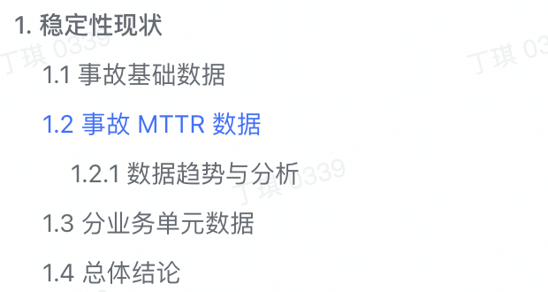

概述
- SRE 稳定性专题相关机制概述
不出问题的基线
作为一个 SRE，想做到“不出问题”这个基线，关键还是要靠大家，如何靠大家呢？就是要落地一套稳定性的机制体系，用机制的严格执行来约束大家，这套机制也必须得到团队 leader 的全力支持，不然无法展开，这套机制包括：
- 稳定性意识
- 日常值班机制
- 报警响应机制
- 复盘机制
- 故障演练机制
- 故障奖惩机制
- 大促保障机制
比如，如果总是 SRE 人员去响应报警和值班，就会非常疲惫劳累，人不可能永远关注报警，那怎么办呢？可以从报警机制、自动化、值班机制 3 个方面入手：
一方面，让报警更加准确和完善，减少误报和漏报，防止大家不必要的介入，另一方面产出自动化机器人，自动进行一些机器重启，工单查询，问题简单排查之类的工作，还有就是建立值班轮班，让每个人都参与进来，既能让大家熟悉业务，又能提高每个人的稳定性意识。
对于 SRE 来说，指定机制并且严格落地，比事必躬亲更加重要。上面这些机制，将在后面的章节中详细论述。
稳定性保障
着重介绍稳定性保障方案子项
- 监控报警
-
- 监控大盘(是否具备好用易用大盘)
-
- 各个组件容量水位提前预警
-
- 外部拨测(模拟用户行为)
- 容灾建设和演练
- 变更管控
-
- 包括服务版本迭代
-
- 配置变更
-
- 各类自建运维平台、运营平台
- 应急响应机制
- 值班机制
- 容量管理(成本优化)
- 巡检(容量水位巡检、依赖项隐患发现)
一些说明
- 拨测是指模拟用户行为，定期从产品外部发起 API 调用, 看是否正常
- 巡检是指 SRE 主动巡检各个组件的容量水位, 看是否处于一个比较健康的状态
稳定性现状怎么梳理？
主要分如下模块

主要考核 MTTR 达标率和事故主动发现率.
- 比如规定 MTTR 为
1-5-10, 那么有多少事故处理过程是符合该规定的, 占总体事故数比例为多少. - 事故主动发现率很好理解, 就是有多少事故是技术团队主动发现的, 占总体事故数比例为多少.
稳定性目标怎么制定？
关键目标
-
1 事故数目标
-
- 1 XX 全年事故数目标同比下降 20% 左右
-
- 2 XX 全年某个等级以上事故数不超过 1
-
2 事故 MTTR 目标
-
- 1 全年所有服务端事故 30min 恢复率 ≥ 40%，其中下半年 ≥ 50% // MTTR 3-15-30
-
- 2 全年所有客户端事故 2d 恢复率 ≥ 60%，其中下半年 ≥ 80% // MTTR 1-x-2
-
- 3 上述所有事故中涉及外部客户有感的事故 30min 恢复率 ≥ 50% // MTTR 3-15-30
-
3 其他关键目标
-
- 1 全年事故主动发现率 ≥ 60%
-
- 2 各类变更系统或流程在 Q4 结束前变更成熟度评级 L3 达标率 ≥ 90%，L3+ 达标率 ≥ 40%
-
- 3 各业务单元的 SLI 指数可衡量且 ≥ 99%